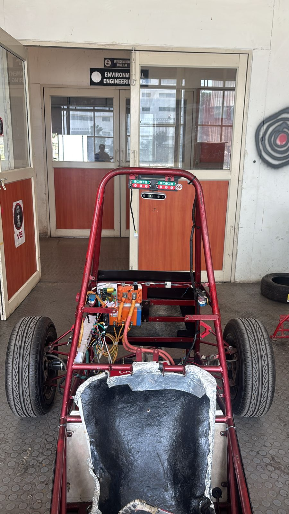

Research project
Robust Autonomous Navigation for Indian Road Environments
Investigating adaptive sensor fusion and future-aware environmental prediction for robust autonomous navigation.

Motivation
Indian road environments present significant challenges for autonomous driving because of mixed traffic, unmarked roads, unpredictable interactions, partial occlusions, and changing sensing conditions.
Navigation systems must remain reliable even when individual sensors provide incomplete, degraded or uncertain information. This research investigates how adaptive sensor fusion and future-aware environmental prediction can improve navigation robustness in these conditions.
Research hypothesis
Future-aware prediction and adaptive sensor fusion will improve navigation robustness under degraded sensing in representative Indian-road scenarios.
Project goal
Develop an autonomous navigation system capable of combining information from multiple sensors to support reliable perception and navigation in complex Indian-road environments. The long-term goal is to implement and evaluate the developed system on a physical autonomous vehicle platform.
My contribution
My primary research responsibility is developing and investigating the multi-sensor fusion algorithm. The intended approach investigates adaptive integration of sensor information, accounting for varying sensor reliability and environmental uncertainty.
Experimental evaluation
Planned evaluation will consider:
- Clean versus degraded sensing.
- Fixed versus adaptive sensor fusion.
- Mixed traffic and occlusion scenarios.
- Unmarked and challenging road conditions.
- Navigation completion, collisions and path errors.
- Perception accuracy.
- Computational latency.
Current status
Algorithm development and research in progress. Physical vehicle implementation is a project goal, not a completed outcome.